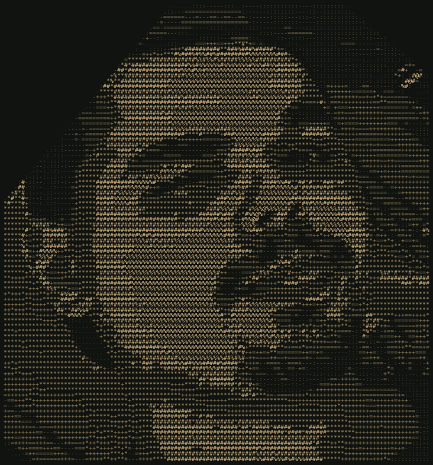

01WEB
SITE INSTITUCIONAL / HTML / CSS / JAVASCRIPT
Ana Paula Rodrigues Advocacia
Site profissional de advocacia, com apresentação do escritório, áreas de atuação, blog jurídico e contato por WhatsApp.
✦ REGISTRO PESSOAL Nº 038
DESENVOLVEDOR FULL STACK
TAMBÉM CONHECIDO COMO EXXXTRIKER
Interfaces, APIs e bancos de dados.
Meu foco é desenvolvimento full stack.
Por aqui, você encontra meu código e meus projetos.
ARQUIVOS / 02
Sites, interfaces e integrações que já saíram do papel. Uma seleção dos meus trabalhos em desenvolvimento web e aplicações para comunidades.
Site profissional de advocacia, com apresentação do escritório, áreas de atuação, blog jurídico e contato por WhatsApp.
Áudio e sistemas de RPG: música, soundboard, cartas, inventário e economia por servidor.
Ferramentas de moderação, minigames e integração com Minecraft para comunidades no Discord.

UM POUCO SOBRE MIM
DESENVOLVEDOR FULL STACK EM FORMAÇÃO
Depois de terminar a escola, pensei em seguir a carreira da minha família: a advocacia. Cursei dois semestres de Direito, mas acabei encontrando outro caminho.
Fiz um curso de manutenção e redes e foi ali que tive certeza de que queria trabalhar com tecnologia. Me inscrevi em Ciência da Computação para continuar nessa área e aprofundar meus conhecimentos.
Hoje, quero desenvolver minhas habilidades como dev e construir projetos próprios. Para o futuro, tenho dois caminhos em mente: atuar como perito na área de tecnologia ou empreender.
Dois semestres seguindo a tradição da família.
O curso que confirmou minha escolha pela tecnologia.
Inscrição no curso para dar o próximo passo nessa área.
INVENTÁRIO / 03
Tecnologias com as quais trabalho e conhecimentos que venho desenvolvendo.
Estrutura, estilo e interação no navegador.
Serviços, comandos e integrações.
Organização e armazenamento de informações.
Python / C# / C
Inventário em atualização.COMUNICAÇÕES / 04
Uma ideia de projeto, uma troca sobre código
ou só um olá. Você me encontra por aqui.
LEONARDO CARVALHO
@EXXXTRIKER